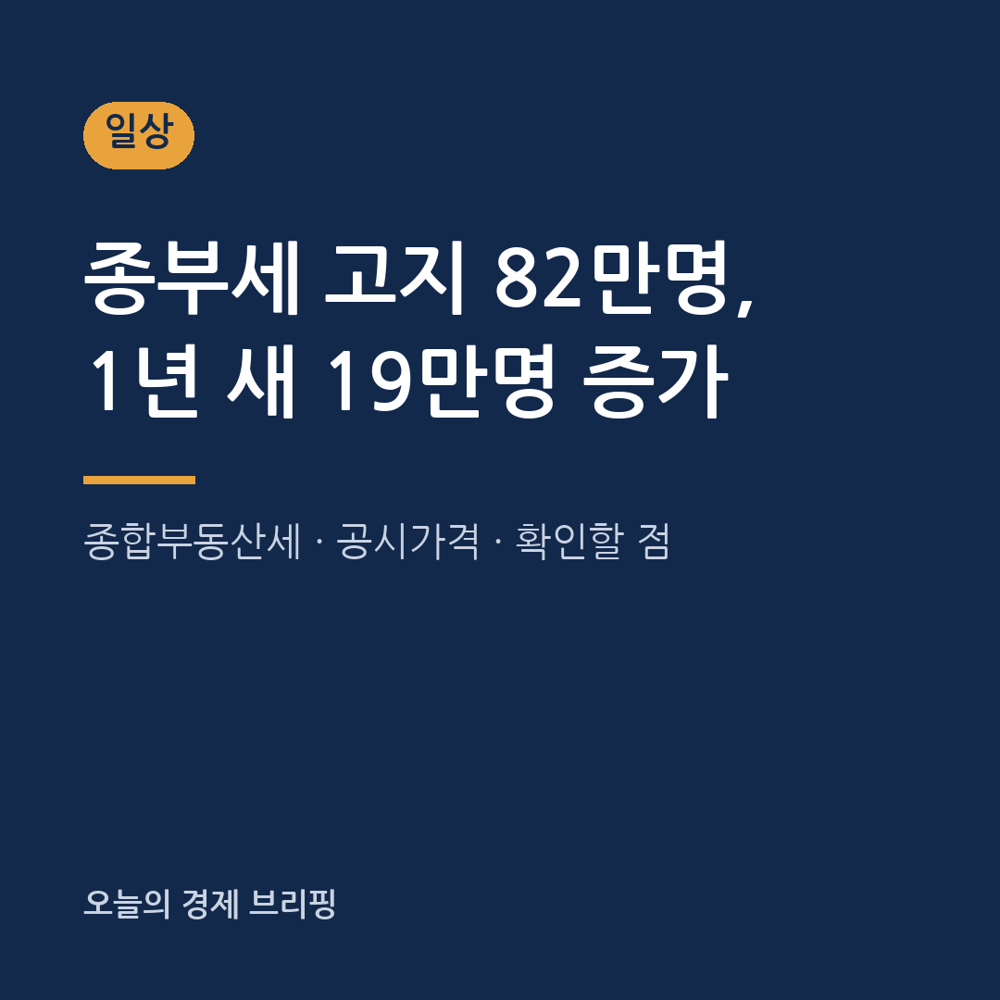
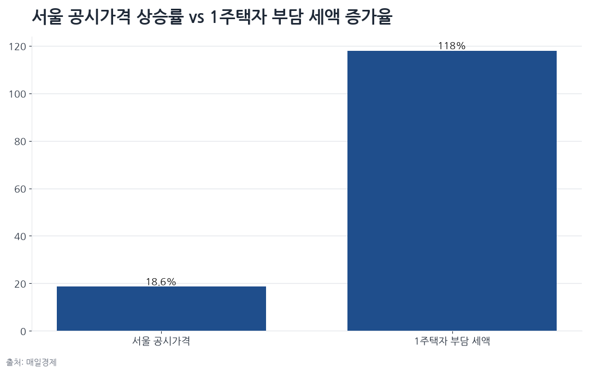

2026-11-26-1749-tistory 발행 키트 · 이 페이지는 검색에 노출되지 않습니다.
제목
카테고리
일상태그
본문 (그림·표 포함)
휴대폰 블로그 앱에서는 그림이 같이 붙지 않을 수 있어요. 그때는 [글자만 복사] 후 아래 이미지를 저장해 [그래프1]·[표1] 자리에 첨부하세요.
올해 종합부동산세 고지 대상자는 82만 명으로, 1년 전보다 19만 명 늘었습니다. 1가구 1주택자의 고지 인원과 세액 증가폭이 특히 컸고, 세제 개편으로 내년에는 대상이 더 늘 수 있다는 전망도 나왔습니다.
이 글에서는 배경, 핵심 숫자, 생활에 미치는 영향, 고지서를 받은 뒤 확인할 점을 순서대로 정리합니다. 부록으로 내일과 주말 이동에 참고할 날씨·철도 소식도 덧붙입니다.

▶ 배경: 수도권 집값 상승과 공시가격 인상
종합부동산세(보유한 주택·토지의 공시가격 합계가 기준을 넘을 때 부과되는 국세)는 공시가격이 오르면 대상자와 세액이 함께 커지는 구조입니다. 올해는 수도권을 중심으로 집값이 오르면서 과세 대상이 크게 늘었습니다.
보도에 따르면 서울 공시가격은 18.6% 상승했습니다. 이 영향으로 서울 집값 상승세가 사실상 멈춘 시점에도 세금 부담은 뒤늦게 반영되는 모습입니다.
▶ 핵심 숫자
2026년 종부세 고지 핵심 숫자
| 구분 | 내용 |
|---|---|
| 전체 고지 인원 | 82만 명 (전년 대비 19만 명 증가) |
| 1가구 1주택자 고지 인원 | 50% 넘게 증가 |
| 1주택자 부담 세액 | 118% 증가 |
| 서울 공시가격 | 18.6% 상승 |
출처: 매일경제
1가구 1주택자 고지 인원은 50% 넘게 늘었고, 부담 세액은 118% 증가해 두 배를 넘어섰습니다. 다주택자 중심의 세금이라는 인식과 달리 한 채를 가진 가구의 부담이 부각된 점이 이번 고지의 특징입니다.

▶ 영향: 내년에는 대상이 더 늘 수 있습니다
보도는 세제 개편의 영향으로 내년에 고지 대상이 더 늘어날 것으로 내다봤습니다. 공시가격 변동과 세법 변경이 함께 작용하는 만큼, 보유 자산이 있는 가구는 내년 계획도 미리 점검해 볼 필요가 있습니다.
다만 개별 가구의 세액이나 구체적인 개편 내용은 이번 자료에서 확인되지 않았습니다. 정확한 금액은 본인 고지서 기준으로 판단해야 합니다.
▶ 확인할 점: 고지서를 받았다면
첫째, 고지서에 적힌 납부 기한과 납부 방법을 확인합니다. 둘째, 공시가격과 보유 주택 수가 사실대로 반영됐는지 살펴봅니다.
셋째, 세액이 예상과 크게 다르다면 국세청 안내나 관할 세무서에 문의하는 것이 가장 정확합니다. 기한과 세부 요건은 반드시 공식 안내로 확인하시기 바랍니다.
▶ 참고: 내일·주말 이동 정보
27일 금요일은 낮 최고기온이 21도까지 올라 예년보다 포근하겠고, 중부지방에는 비가 조금 내릴 전망입니다. 주말에는 추위가 찾아옵니다.
한편 26일 시작된 철도노조 준법투쟁으로 서울역에서는 열차 지연 안내가 나왔고, 포항·진주 출발 열차 도착 안내판에는 10분 지연이 표시됐습니다. 열차 이용 계획이 있다면 운행 정보를 사전에 확인하시기 바랍니다.
이동 전 확인 정보
| 구분 | 내용 | 시점 | 확인처 |
|---|---|---|---|
| 날씨 | 낮 최고 21도, 중부 비 조금, 주말 추위 | 27일 및 주말 | 기상청 예보 |
| 철도 | 준법투쟁에 따른 열차 지연 안내 | 26일 시작 | 코레일 운행 정보 |
출처: 연합뉴스, 세계일보
▶ 정리
1. 올해 종부세 고지 대상은 82만 명으로 1년 새 19만 명 늘었습니다.
2. 1주택자 고지 인원은 50% 넘게, 부담 세액은 118% 늘었고 내년에는 더 늘 수 있다는 전망이 있습니다.
3. 고지서의 납부 기한과 방법, 공시가격 반영 여부를 먼저 확인하세요.
이미지 (개별 복사·저장)
출처 (본문 맨 아래에 붙여넣기 권장)
- 매일경제, 종부세 고지서 ‘82만명’에 날아갔다…1년새 19만명 늘어, https://www.mk.co.kr/news/economy/12219702 - 매일경제, 종부세 82만명 고지 … 1년새 19만명 급증, https://www.mk.co.kr/news/economy/12219709 - 연합뉴스, 금요일 낮 최고 21도로 포근…중부에 비 조금, 주말엔 추위, https://www.yna.co.kr/view/AKR20261126169700530 - 세계일보, 철도노조 준법투쟁 첫날…‘열차 지연’에 발길 분주 [한강로 사진관], https://www.segye.com/newsView/20261126515183